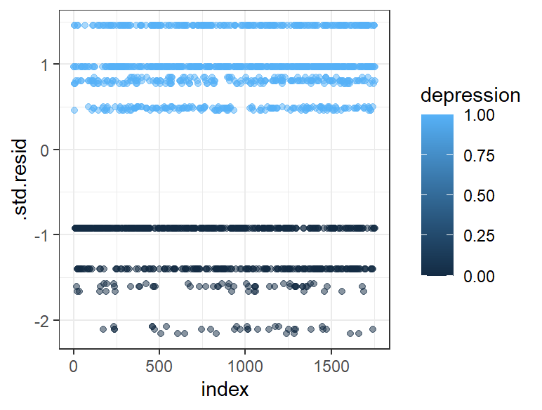
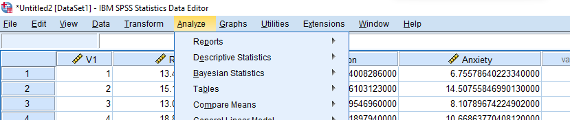
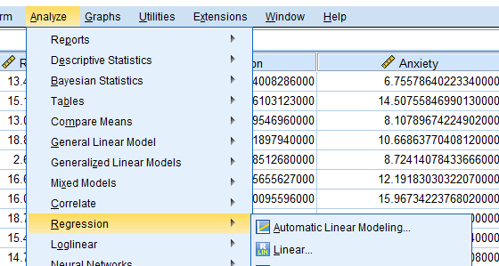
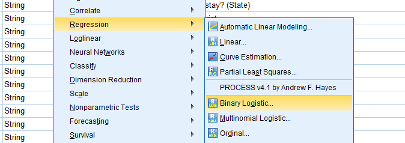
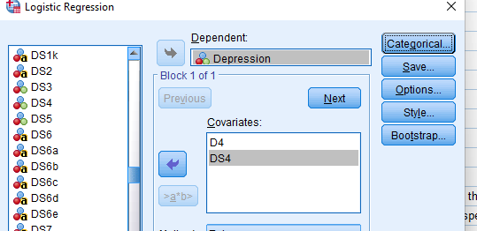
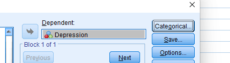
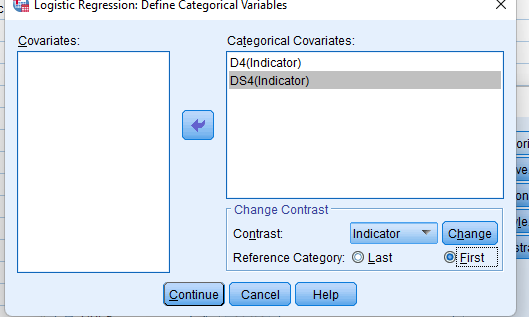
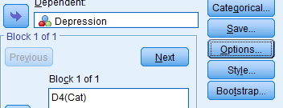
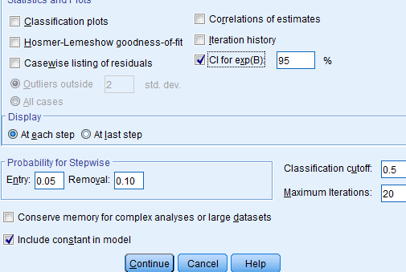
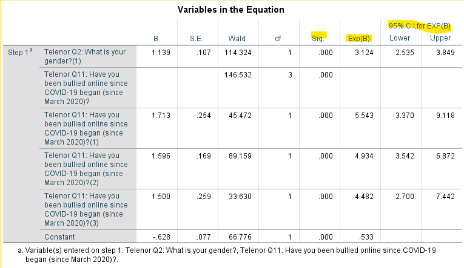

<!DOCTYPE html>
<html lang="en">
  <head>
    <meta charset="utf-8" />
    <meta name="viewport" content="width=device-width, initial-scale=1.0, maximum-scale=1.0, user-scalable=no" />

    <title></title>
    <link rel="stylesheet" href="dist/reveal.css" />
    <link rel="stylesheet" href="dist/theme/serif.css" id="theme" />
    <link rel="stylesheet" href="plugin/highlight/zenburn.css" />
	<link rel="stylesheet" href="css/layout.css" />
	<link rel="stylesheet" href="plugin/customcontrols/style.css">
	<link rel="stylesheet" href="plugin/chalkboard/style.css">


    <script defer src="dist/fontawesome/all.min.js"></script>

	<script type="text/javascript">
		var forgetPop = true;
		function onPopState(event) {
			if(forgetPop){
				forgetPop = false;
			} else {
				parent.postMessage(event.target.location.href, "app://obsidian.md");
			}
        }
		window.onpopstate = onPopState;
		window.onmessage = event => {
			if(event.data == "reload"){
				window.document.location.reload();
			}
			forgetPop = true;
		}

		function fitElements(){
			const itemsToFit = document.getElementsByClassName('fitText');
			for (const item in itemsToFit) {
				if (Object.hasOwnProperty.call(itemsToFit, item)) {
					var element = itemsToFit[item];
					fitElement(element,1, 1000);
					element.classList.remove('fitText');
				}
			}
		}

		function fitElement(element, start, end){

			let size = (end + start) / 2;
			element.style.fontSize = `${size}px`;

			if(Math.abs(start - end) < 1){
				while(element.scrollHeight > element.offsetHeight){
					size--;
					element.style.fontSize = `${size}px`;
				}
				return;
			}

			if(element.scrollHeight > element.offsetHeight){
				fitElement(element, start, size);
			} else {
				fitElement(element, size, end);
			}		
		}


		document.onreadystatechange = () => {
			fitElements();
			if (document.readyState === 'complete') {
				if (window.location.href.indexOf("?export") != -1){
					parent.postMessage(event.target.location.href, "app://obsidian.md");
				}
				if (window.location.href.indexOf("print-pdf") != -1){
					let stateCheck = setInterval(() => {
						clearInterval(stateCheck);
						window.print();
					}, 250);
				}
			}
	};


        </script>
  </head>
  <body>
    <div class="reveal">
      <div class="slides"><section  data-markdown><script type="text/template"><!-- .slide: class="drop" -->
<div class="" style="position: absolute; left: 0px; top: 0px; height: 1080px; width: 1920px; min-height: 1080px; display: flex; flex-direction: column; align-items: center; justify-content: center" absolute="true">

## Logistic Regression with Categorical Predictors: Sharing Session

<br>
<br>

<div class="" style="display: flex; flex-direction: column; align-items: center; justify-content: space-evenly" align="justify">

Author: Pang Khong Yun
<split> Subject: PSY5024 Intermediate & Advanced Statistics  
Lecturer: Dr Lin Mei Hua
</div>
</div></script></section><section  data-markdown><script type="text/template"><!-- .slide: class="drop" -->
<div class="" style="position: absolute; left: 0px; top: 0px; height: 1080px; width: 1920px; min-height: 1080px; display: flex; flex-direction: column; align-items: center; justify-content: center" absolute="true">

## Logistic Regression

<div class="has-light-background" style="background-color: lightblue; display: flex; flex-direction: column; align-items: center; justify-content: center" align="center">

**Logistic regression** is a classification algorithm. It is used to predict a **binary outcome** based on a set of independent variables (*Categorical* or *Continuous*)
</div>
</div></script></section><section  data-markdown><script type="text/template"><!-- .slide: class="drop" -->
<div class="" style="position: absolute; left: 0px; top: 0px; height: 1080px; width: 1920px; min-height: 1080px; display: flex; flex-direction: column; align-items: center; justify-content: center" absolute="true">

<div class="has-light-background" style="background-color: pink" >

## Background
<br>
<br>

- Amid the lockdown during the COVID-19 pandemic, online socialization had become increasingly important as physical and face-to-face activities were restricted <!-- .element: class="fragment" data-fragment-index="1" -->
-  Distance or online learning was therefore implemented to prevent the spread of the virus in educational settings. <!-- .element: class="fragment" data-fragment-index="2" -->
-  There is an exhibition of growing dependence on technology among adolescents <!-- .element: class="fragment" data-fragment-index="3" -->
- There were a significant increase in cyberbullying incidents during the pandemic <!-- .element: class="fragment" data-fragment-index="4" -->
-  Cybervictimization is associated with depression <!-- .element: class="fragment" data-fragment-index="5" -->
- Female is more vulnerable to depression than male. <!-- .element: class="fragment" data-fragment-index="6" -->
</div>
</div></script></section><section  data-markdown><script type="text/template"><!-- .slide: class="drop" -->
<div class="" style="position: absolute; left: 0px; top: 0px; height: 1080px; width: 1920px; min-height: 1080px; display: flex; flex-direction: column; align-items: center; justify-content: center" absolute="true">

<div class="has-light-background" style="background-color: lightblue; position: absolute; left: 0%; top: 0%; height: 20%; width: 100%; display: flex; flex-direction: column; align-items: center; justify-content: center" >

## Research Hypotheses
</div>

<div class="" style="display: flex; flex-direction: column; align-items: center; justify-content: space-evenly" align="justify">

H1: Individuals who have  **cyberbullting experience** since the COVID-19 pandemic is associated with higher **depression**   
H2: Female has higher odds than male of developing depression during the COVD-19 pandemic
</div>
</div></script></section><section  data-markdown><script type="text/template"><!-- .slide: class="has-light-background drop" data-background-color="lightyellow" -->
<div class="" style="position: absolute; left: 0px; top: 0px; height: 1080px; width: 1920px; min-height: 1080px; display: flex; flex-direction: column; align-items: center; justify-content: center" absolute="true">

## Robustness Checks
</div></script></section><section  data-markdown><script type="text/template"><!-- .slide: class="has-light-background drop" data-background-color="lightyellow" -->
<div class="" style="position: absolute; left: 0px; top: 0px; height: 1080px; width: 1920px; min-height: 1080px; display: flex; flex-direction: column; align-items: center; justify-content: center" absolute="true">

### The Presence of Outliers

```{r}
# Specify thelogistic regression model
CE <- as.factor(CE)
gender <- as.factor(gender)
dtlysis = glm(formula = depression ~ CE + gender, data = dt, family = binomial)
# Use te Cook distance of value 3 
install.packages{"tidyverse"}
library(tidyverse)
install.packages("broom")
library(broom)
# Outlier
model.data <- augment(dtlysis) %>% 
  mutate(index = 1:n()) 
model.data %>% top_n(3, .cooksd)
# Visualize the result
ggplot(model.data, aes(index, .std.resid)) + 
  geom_point(aes(color = depression), alpha = .5) +
  theme_bw()
```

<split left= "8" right= "10" gap= "1">



- Cook distance
	- cases have *threshold value of > 3* is influential outliers
- **No influential outlier**
</split>
</div></script></section><section  data-markdown><script type="text/template"><!-- .slide: class="has-light-background drop" data-background-color="lightyellow" -->
<div class="" style="position: absolute; left: 0px; top: 0px; height: 1080px; width: 1920px; min-height: 1080px; display: flex; flex-direction: column; align-items: center; justify-content: center" absolute="true">

## Multicollinearity

```{r}
# Multicollinearity
installed.packages("car")
library(car)
vif(dtlysis)
```

| Variable                 |  VIF  |
| ------------------------ |:-----:|
| Cyberbullying experience | 1.004 |
| Gender                   | 1.012 |
|                          |       |

The VIF value of the variables are all *lower than 5* which indicate **no multicollinearity**.
</div></script></section><section  data-markdown><script type="text/template"><!-- .slide: class="has-light-background drop" data-background-color="lightblue" -->
<div class="" style="position: absolute; left: 0px; top: 0px; height: 1080px; width: 1920px; min-height: 1080px; display: flex; flex-direction: column; align-items: center; justify-content: center" absolute="true">

## SPSS Practice
</div></script></section><section  data-markdown><script type="text/template"><!-- .slide: class="has-light-background drop" data-background-color="lightblue" -->
<div class="" style="position: absolute; left: 0px; top: 0px; height: 1080px; width: 1920px; min-height: 1080px; display: flex; flex-direction: column; align-items: center; justify-content: center" absolute="true">

## Step 1: Click "Analyze"

</div></script></section><section  data-markdown><script type="text/template"><!-- .slide: class="has-light-background drop" data-background-color="lightblue" -->
<div class="" style="position: absolute; left: 0px; top: 0px; height: 1080px; width: 1920px; min-height: 1080px; display: flex; flex-direction: column; align-items: center; justify-content: center" absolute="true">

## Step 2: Click "Regression"

</div></script></section><section  data-markdown><script type="text/template"><!-- .slide: class="has-light-background drop" data-background-color="lightblue" -->
<div class="" style="position: absolute; left: 0px; top: 0px; height: 1080px; width: 1920px; min-height: 1080px; display: flex; flex-direction: column; align-items: center; justify-content: center" absolute="true">

## Step 3: Click "Binary Logistic"

</div></script></section><section  data-markdown><script type="text/template"><!-- .slide: class="has-light-background drop" data-background-color="lightblue" -->
<div class="" style="position: absolute; left: 0px; top: 0px; height: 1080px; width: 1920px; min-height: 1080px; display: flex; flex-direction: column; align-items: center; justify-content: center" absolute="true">

## Step 4: Input variables

</div></script></section><section  data-markdown><script type="text/template"><!-- .slide: class="has-light-background drop" data-background-color="lightblue" -->
<div class="" style="position: absolute; left: 0px; top: 0px; height: 1080px; width: 1920px; min-height: 1080px; display: flex; flex-direction: column; align-items: center; justify-content: center" absolute="true">

## Step 5: Click "Categorical"

</div></script></section><section  data-markdown><script type="text/template"><!-- .slide: class="has-light-background drop" data-background-color="lightblue" -->
<div class="" style="position: absolute; left: 0px; top: 0px; height: 1080px; width: 1920px; min-height: 1080px; display: flex; flex-direction: column; align-items: center; justify-content: center" absolute="true">

## Step 6: Insert the categorical variables into the right box and click first on both variables

</div></script></section><section  data-markdown><script type="text/template"><!-- .slide: class="has-light-background drop" data-background-color="lightblue" -->
<div class="" style="position: absolute; left: 0px; top: 0px; height: 1080px; width: 1920px; min-height: 1080px; display: flex; flex-direction: column; align-items: center; justify-content: center" absolute="true">

## Step 7: Click "Option"

</div></script></section><section  data-markdown><script type="text/template"><!-- .slide: class="has-light-background drop" data-background-color="lightblue" -->
<div class="" style="position: absolute; left: 0px; top: 0px; height: 1080px; width: 1920px; min-height: 1080px; display: flex; flex-direction: column; align-items: center; justify-content: center" absolute="true">

## Step 8: Checked "CI" at 95%

</div></script></section><section  data-markdown><script type="text/template"><!-- .slide: class="has-light-background drop" data-background-color="lightblue" -->
<div class="" style="position: absolute; left: 0px; top: 0px; height: 1080px; width: 1920px; min-height: 1080px; display: flex; flex-direction: column; align-items: center; justify-content: center" absolute="true">

## SPSS Syntax

```{spss}
# Logistic regression 
LOGISTIC REGRESSION VARIABLES Depression
/METHOD=ENTER D4 DS4
/CONTRAST (D4)=Indicator(1)
/CONTRAST (DS4)=Indicator(1)
/PRINT=CI(95)
/CRITERIA=PIN(.05) POUT(.10) ITERATE(20) CUT(.5).
```
</div></script></section><section  data-markdown><script type="text/template"><!-- .slide: class="has-light-background drop" data-background-color="lightblue" -->
<div class="" style="position: absolute; left: 0px; top: 0px; height: 1080px; width: 1920px; min-height: 1080px; display: flex; flex-direction: column; align-items: center; justify-content: center" absolute="true">

## Result
<split left= "10" right= "6" gap= "1">



- The Exp (B) (Odd ratio) more than 1 means higher than the compared group
- Less than 1 means lower likelihood than the compared group
</split>
</div></script></section><section  data-markdown><script type="text/template"><!-- .slide: class="drop" -->
<div class="" style="position: absolute; left: 0px; top: 0px; height: 1080px; width: 1920px; min-height: 1080px; display: flex; flex-direction: column; align-items: center; justify-content: center" absolute="true">

### How to Report Logistic Regression

<br>
<br>

<div class="has-light-background" style="background-color: pink; display: flex; flex-direction: column; align-items: center; justify-content: space-evenly" drag="100 100" align="justify">

- Results show that females are 212.4 %  (3.124-1 = 2.124) more likely to have depression than males during the COVID-19 pandemic.
- Individuals who have been cyberbullied since COVID-19 pandemic is 5.543 times more likely than those who had not been cyberbullied since COVID-19 pandemic.
- When using individuals who had not been cyberbullied since the COVID-19 pandemic as the reference group, the group consisted of those preferred not to say of being cyberbullied  has a higher likelihood of developing depression (*OR*= 3.85, *p* < 0.001).
</div>
</div></script></section><section  data-markdown><script type="text/template"><!-- .slide: class="drop" -->
<div class="" style="position: absolute; left: 0px; top: 0px; height: 1080px; width: 1920px; min-height: 1080px; display: flex; flex-direction: column; align-items: center; justify-content: center" absolute="true">

# Thank you
</div></script></section></div>
    </div>

    <script src="dist/reveal.js"></script>

    <script src="plugin/markdown/markdown.js"></script>
    <script src="plugin/highlight/highlight.js"></script>
    <script src="plugin/zoom/zoom.js"></script>
    <script src="plugin/notes/notes.js"></script>
    <script src="plugin/math/math.js"></script>
	<script src="plugin/mermaid/mermaid.js"></script>
	<script src="plugin/chart/chart.min.js"></script>
	<script src="plugin/chart/plugin.js"></script>
	<script src="plugin/menu/menu.js"></script>
	<script src="plugin/customcontrols/plugin.js"></script>
	<script src="plugin/chalkboard/plugin.js"></script>

    <script>
      function extend() {
        var target = {};
        for (var i = 0; i < arguments.length; i++) {
          var source = arguments[i];
          for (var key in source) {
            if (source.hasOwnProperty(key)) {
              target[key] = source[key];
            }
          }
        }
        return target;
      }

	  function isLight(color) {
		let hex = color.replace('#', '');

		// convert #fff => #ffffff
		if(hex.length == 3){
			hex = `${hex[0]}${hex[0]}${hex[1]}${hex[1]}${hex[2]}${hex[2]}`;
		}

		const c_r = parseInt(hex.substr(0, 2), 16);
		const c_g = parseInt(hex.substr(2, 2), 16);
		const c_b = parseInt(hex.substr(4, 2), 16);
		const brightness = ((c_r * 299) + (c_g * 587) + (c_b * 114)) / 1000;
		return brightness > 155;
	}

	var bgColor = getComputedStyle(document.documentElement).getPropertyValue('--r-background-color').trim();
	var isLight = isLight(bgColor);

	if(isLight){
		document.body.classList.add('has-light-background');
	} else {
		document.body.classList.add('has-dark-background');
	}

      // default options to init reveal.js
      var defaultOptions = {
        controls: true,
        progress: true,
        history: true,
        center: true,
        transition: 'default', // none/fade/slide/convex/concave/zoom
        plugins: [
          RevealMarkdown,
          RevealHighlight,
          RevealZoom,
          RevealNotes,
          RevealMath.MathJax3,
		  RevealMermaid,
		  RevealChart,
		  RevealCustomControls,
		  RevealMenu,
		  RevealChalkboard, 
        ],


    	allottedTime: 120 * 1000,

		mathjax3: {
			mathjax: 'plugin/math/mathjax/tex-mml-chtml.js',
		},
		markdown: {
		  gfm: true,
		  mangle: true,
		  pedantic: false,
		  smartLists: false,
		  smartypants: false,
		},

		mermaid: {
			theme: isLight ? 'default' : 'dark',
		},

		customcontrols: {
			controls: [
				{ icon: '<i class="fa fa-pen-square"></i>',
				title: 'Toggle chalkboard (B)',
				action: 'RevealChalkboard.toggleChalkboard();'
				},
				{ icon: '<i class="fa fa-pen"></i>',
				title: 'Toggle notes canvas (C)',
				action: 'RevealChalkboard.toggleNotesCanvas();'
				},
			]
		},
		menu: {
			loadIcons: false
		}
      };

      // options from URL query string
      var queryOptions = Reveal().getQueryHash() || {};

      var options = extend(defaultOptions, {"width":1920,"height":1080,"margin":0.04,"controls":true,"progress":true,"slideNumber":true,"transition":"slide","transitionSpeed":"default"}, queryOptions);
    </script>

    <script>
      Reveal.initialize(options);
    </script>
  </body>

  <!-- created with Advanced Slides -->
</html>
